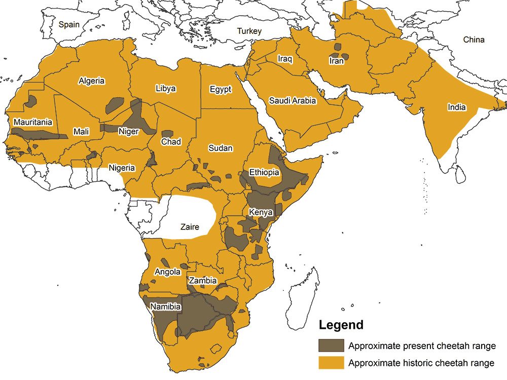
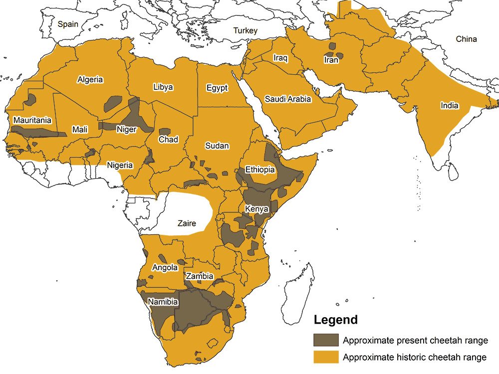

 Click here for more pictures
Cheetahs are the fastest land animal on the planet. They live in Africa and can run up to 74 miles per hour in short bursts. Cheetahs are yellow with black spots. They are one of the many big cats that live in Africa. They are a vulnerable species as their population in decreasing. Less than 7000 adult cheetahs remaining in the wild. Mainly live in eastern and southern Africa. Their bodies are made to hunt with speed. Their tail, claws, nose, and more are designed and work in such a way that allow them to run really fast. Cheetahs also live alone most of the time. Male cheetahs are the only ones who might live together after they move away from thier mother.
Cheetahs are my favorite animal since I was a kid and they still are. The way they have stripes down their face and how fast they run is how they drew my likingness to them. Another reason is that I like to run and cheetahs are fast runners. I remember in middle school when we had to do a research paper on an animal and I chose cheetahs. One of my laptop background pictures is a cheetah. As a person that loves cheetahs, its sad to see their population declining in the wild.
| Animal | Continent | Speed |
|---|---|---|
| Cheetah | Africa | 74mph |
| Free-tailed bat | Everywhere except Antartica | 60mph |
| Pronghorn | North America | 55mph |
| Springbok | Africa | 55mph |
| Lion | Africa | 50mph |
| Kangaroo | Australia | 44mph |
Pronghorn

Lion
Kangaroo
Cheetahs are so vulnerable in the wild as a cub that their mortality rate is 90%. What makes it worse is that their average life span is 10-12 years. The black stripes down their eyes and the spots help lessen the glare of the sun. Cheetahs don't have much genetic diversity because the population was very low because of the last ice age. Their preferred prey is a gazelle. Something unique about cheetahs is that chirp like a bird rathen than roar. Cheetahs like many other animals have become victims to habitat loss and human hunting.
These two videos shows cheetahs hunting an ostrich and quick facts about cheetahs.
My name is Kush Patel and I am 21 years old. I am a senior at University of Massachusetts Lowell as a computer science major. I like to play videogames and play/watch sports, especially basketball and football. Jaylen Brown of the Celtics is my favorite player. Cookies and Cream is my favorite ice cream flavor. I have visited India 6 times, gone to Vegas, Grand Canyon, Orlando, Flordia, and many other places. Summer and winter are my favorite seasons. Going to the gym is one of favorite hobbies. I have read all three of the Percy Jackson series. I plan on doing masters after i graduate in May and work in the web development field.
Jaylen Brown
UML

Las Vegas
These 2 links are where I got my information about cheetahs from:
National Geographic
Cheetah Conservation Fund